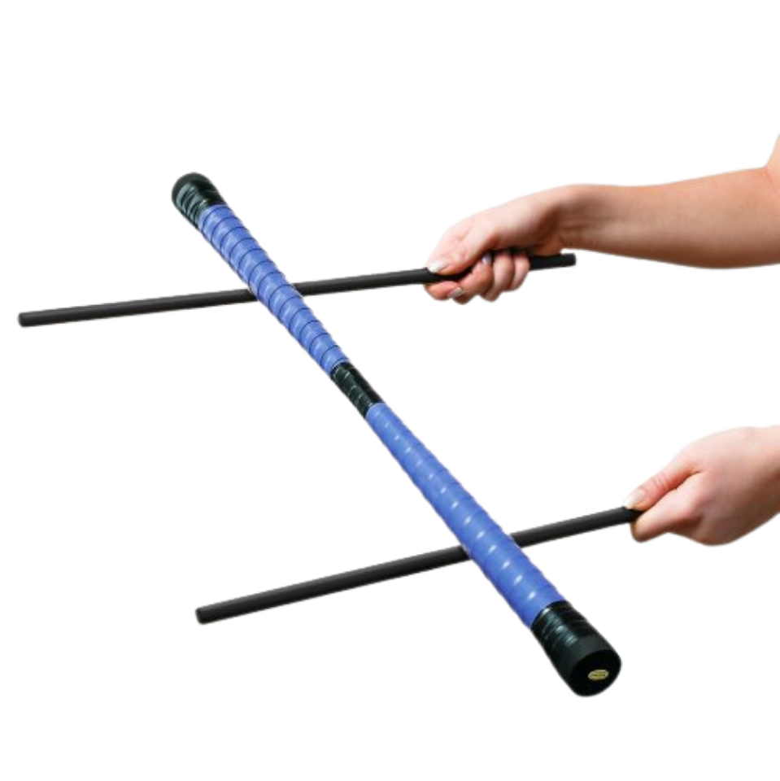

Bâton du Diable
L'art du bâton tournoyant
Qu'est-ce que le bâton du diable
Le bâton du diable, aussi appelé « devil stick » en anglais, est un objet de jonglerie composé d'un bâton central entouré de deux bâtons de contrôle qui le guident. Le bâton central, long et cylindrique, doit être maintenu en équilibre et en rotation à l'aide des deux petits bâtons que le jongleur tient en mains.
Cet art ancestral demande une coordination précise et une concentration soutenue. Le pratiquant crée des figures spectaculaires en faisant tourner le bâton central à grande vitesse, souvent en le faisant passer entre ses mains ou en exécutant des cascades impressionnantes.
Le bâton du diable peut être pratiqué seul ou en groupe, avec ou sans musique, et peut être embrasé pour créer des spectacles de feu encore plus envoutants. C'est une discipline qui combine technique, grâce et présence scénique.
Niveau
Intermédiaire
Âge minimum
10 ans
Matériel
Devil sticks
Style
Dynamique & éblouissant
